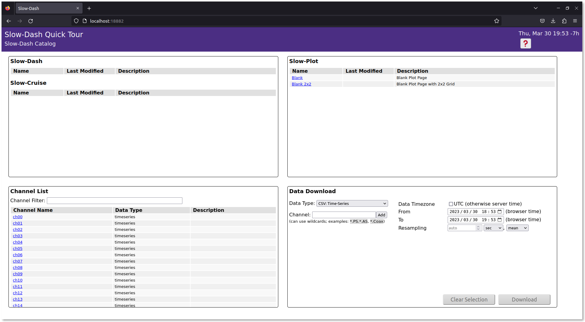
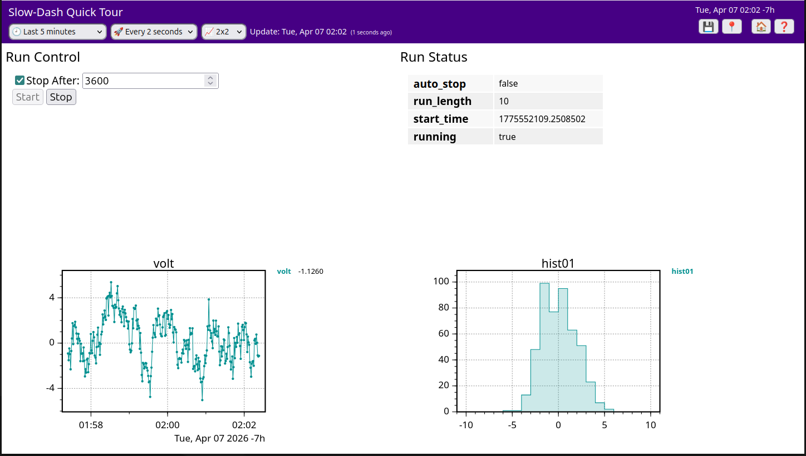

This tour demonstrates how to use SlowDash with SQLite as the data backend, which requires no server setup. All files created during this tour are contained within a single project directory and can be completely removed by simply deleting that directory.
First, create and navigate to a new project directory:
$ mkdir QuickTour
$ cd QuickTourIf you’re using Docker, the directory you just created will be
mounted as a volume in the container. You can work either inside the
container (using docker exec ... /bin/bash) or outside. In
the beginning, we recommend working outside the container.
We’ll use the SlowPy Python library, included with the SlowDash
package, to generate test data. Create a file named
generate-testdata.py in your project directory with the
following code:
from slowpy.control import ControlSystem, RandomWalkDevice
from slowpy.store import DataStore_SQLite, LongTableFormat
class TestDataFormat(LongTableFormat):
schema_numeric = '(datetime DATETIME, timestamp INTEGER, channel VARCHAR(100), value REAL, PRIMARY KEY(timestamp, channel))'
def insert_numeric_data(self, cur, timestamp, channel, value):
cur.execute(f'INSERT INTO {self.table} VALUES(CURRENT_TIMESTAMP,%d,?,%f)' % (timestamp, value), (channel,))
ctrl = ControlSystem()
device = RandomWalkDevice(n=4)
datastore = DataStore_SQLite('sqlite:///QuickTourTestData.db', table="testdata", table_format=TestDataFormat())
def _loop():
for ch in range(4):
data = device.read(ch)
datastore.append(data, tag="ch%02d"%ch)
ctrl.sleep(1)
def _finalize():
datastore.close()
if __name__ == '__main__':
ctrl.stop_by_signal()
while not ctrl.is_stop_requested():
_loop()
_finalize()Details of the script are described in the Controls section. For now, just copy and paste the script and use it to generate some test data.
If you installed SlowPy in a virtual environment (the standard installation method), activate it using either:
$ slowdash-activate-venvor (if slowdash-bashrc hasn’t been sourced):
$ source PATH/TO/SLOWDASH/venv/bin/activateRunning this script will create a SQLite database file and populate it with simulated time-series data every second:
$ python3 generate-testdata.pyAfter letting it run for about a minute, stop the script using
Ctrl-c and examine the created files:
$ ls -l
-rw-r--r-- 1 sanshiro sanshiro 24576 Apr 11 16:52 QuickTourTestData.db
-rwxr-xr-x 1 sanshiro sanshiro 3562 Apr 11 16:51 generate-testdata.pyYou can inspect the database contents using the SQLite command-line
program, sqlite3. If this program isn’t available on your
system, you can skip this step and view the data through SlowDash in the
next section.
$ sqlite3 QuickTourTestData.db
SQLite version 3.31.1 2020-01-27 19:55:54
Enter ".help" for usage hints.
sqlite> .table
testdata
sqlite> .schema testdata
CREATE TABLE testdata(datetime DATETIME, timestamp INTEGER, channel VARCHAR(100), value REAL, PRIMARY KEY(timestamp, channel));
sqlite> select * from testdata limit 10;
2023-04-11 23:52:13|1681257133|ch00|0.187859
2023-04-11 23:52:13|1681257133|ch01|-0.418021
2023-04-11 23:52:13|1681257133|ch02|0.482607
2023-04-11 23:52:13|1681257133|ch03|1.733749
...As shown above, the schema of the data table is:
testdata(datetime DATETIME, timestamp INTEGER, channel VARCHAR(100), value REAL, PRIMARY KEY(timestamp, channel))and the table contents are:
| datetime (DATETIME/TEXT) | timestamp (INTEGER) | channel (VARCHAR(100)) | value (REAL) |
|---|---|---|---|
| 2023-04-11 23:52:13 | 1681257133 | ch00 | 0.187859 |
| 2023-04-11 23:52:13 | 1681257133 | ch01 | -0.418021 |
| 2023-04-11 23:52:13 | 1681257133 | ch02 | 0.482607 |
| 2023-04-11 23:52:13 | 1681257133 | ch03 | 1.733749 |
| … |
(Note: In SQLite, DATETIME is stored as TEXT. Times are in UTC, though not explicitly specified.)
For demonstration purposes, this table includes two timestamp columns: one for (emulated) hardware data time in UNIX timestamp format, and another for database writing time in datetime format. In a real system, you might use just one of these formats.
For information about other supported data table formats, please refer to the Data Binding section.
Each SlowDash project requires a configuration file named
SlowdashProject.yaml in the project directory. This file
specifies which database to read, which columns contain timestamps and
data values, and other essential settings.
Create SlowdashProject.yaml with the following
content:
slowdash_project:
name: QuickTour
title: SlowDash Quick Tour
data_source:
url: sqlite:///QuickTourTestData.db
time_series:
schema: testdata [channel] @timestamp(unix) = valueTo use the datetime column for timestamps instead,
modify the schema section as follows:
time_series:
schema: testdata[channel]@datetime(unspecified utc)=valueThe timestamp type is specified after the time column name. Common
timestamp types include: - aware (or
with time zone): for time data with explicit time zones -
naive (or without time zone or
local): for implied “local” time zone (generally not
recommended) - unspecified utc: for time data without
explicit time zones but known to be in UTC
(Docker users should first enter the container using
docker exec -it CONTAINER_ID /bin/bash.)
Test your configuration using the slowdash config
command in the project directory:
$ slowdash config
{
"project": {
"name": "QuickTour",
"title": "SlowDash Quick Tour",
"error_message": ""
},
"data_source": {
"type": "SQLite",
"parameters": {
"file": "QuickTourTestData.db",
"time_series": {
"schema": "testdata[channel]@timestamp(unix)=value"
}
}
},
"style": null,
"contents": {
"slowdash": [],
"slowplot": []
}
}The channels in the data-store can be listed with the
slowdash channels command:
$ slowdash channels
[
{"name": "ch00"}, {"name": "ch01"}, {"name": "ch02"}, ...
]The data values can be displayed with the slowdash data
command:
$ slowdash "data/ch00?length=10"
{
"ch00": {
"start": 1680223465, "length": 10,
"t": [0.0, 2.0, 3.0, 4.0, 5.0, 6.0, 7.0, 8.0, 9.0],
"x": [5.180761, 5.92074, 5.515459, 4.883299, 5.650556, 4.284527, 3.884656, 3.223627, 2.06343]
}
}This step starts a SlowDash server on port 18881. To stop the server,
press Ctrl-c.
$ slowdash --port=18881Image from DockerHub
$ docker run --rm -p 18881:18881 -v $(pwd):/project slowproj/slowdashor locally created image:
$ docker run --rm -p 18881:18881 -v $(pwd):/project slowdashCreate a docker-compose.yaml file in the project
directory
version: '3'
services:
slowdash:
image: slowproj/slowdash
volumes:
- .:/project
ports:
- "18881:18881"Then start docker compose
$ docker compose upLaunch a web browser and access
http://localhost:18881.
$ firefox http://localhost:18881The browser should show the home page of the project:

In order to continuously fill the data while plotting, run the test-data generator in parallel (maybe in another terminal window):
$ python3 generate-testdata.pyThe data file size is roughly 5 MB per hour. The test data file,
QuickTourTestData.db, can be deleted safely when SlowDash
is not running. Once the file is deleted, run
generate-testdata.py again before starting SlowDash next
time.
The easiest way to get started is to explore the GUI:
Currently, only time-series plots are available since our test database contains only time-series data.
You can save and share your plot layouts (called SlowPlot Layouts) by clicking the 💾 (save) button in the top-right corner. Saved layouts appear on the SlowDash home page.
Open a saved layout with a specific time range using a URL:
http://localhost:18881/slowplot.html?config=slowplot-QuickTour.json&time=2023-03-30T18:00:00&reload=0Create a new layout directly through a URL by specifying channels and plot types:
http://localhost:18881/slowplot.html?channel=ch00;ch00/ts-histogram&length=360&reload=60&grid=2x1SlowDash consists of two parts, a web application (web server + browser UI) and a Python library used in user scripts. In the previous example with test data, we used this library, called SlowPy. The application and library work seamlessly together, but each can also operate independently. In this section, we’ll use the SlowPy library alone to read real data from a device, replacing the dummy data generator used in the previous section.
SlowPy is installed automatically along with SlowDash. In the standard installation, it resides inside a virtual environment (venv). Please activate this venv before starting:
$ slowdash-activate-venvYou need to run this command every time you open a new terminal. If
you’re using a dedicated SlowDash machine and no other Python
environments, you can add the following line to your
.bashrc to avoid doing it manually:
source $SLOWDASH_DIR/venv/bin/activateHere, we’ll show an example that reads DC voltage from a network-controllable digital multimeter (DMM). Many DMMs share common command sets, and we have confirmed the following models (verified by ChatGPT, August 2025):
| Manufacturer | Model |
|---|---|
| Keysight / Agilent | 34460A DMM |
| Tektronix / Keithley | DMM6500 |
| Rigol | DM3058 |
| BK Precision | 5492B DMM |
Similarly, many DC power supplies use the same command for output voltage readout. You can therefore use the same example code. The following models are confirmed (ChatGPT, August 2025):
| Manufacturer | Model |
|---|---|
| Keysight / Agilent | E363x / E364x |
| Tektronix / Keithley | 2230G / 2231A |
| Rohde & Schwarz | NGA100 series |
| Rigol | DP800 / DP2000 |
| BK Precision | 9180 / 9190 |
All of these devices are controllable via Ethernet. Before proceeding, make sure your device is powered on, connected to the network, and that you know its IP address (and port number, to be sure - see the manual).
According to ChatGPT, most DMMs and power supplies share a compatible command set. If you have any network-controllable device that can report voltage, you might be able to use it here.
If you don’t have access to any physical device, SlowDash provides a built-in simulator. You can launch it as follows:
$ slowdash-activate-venv
$ cd PATH/TO/SLOWDASH/utils
$ python ./dummy-scpi.py
listening at 172.26.0.1:5025
line terminator is: x0d
type Ctrl-c to stopThis behaves like a real device on your local network (running on
localhost). Press Ctrl-C to stop it.
All of the above devices use the SCPI (Standard Commands for Programmable Instruments) text-based protocol. The commands we’ll use here are as follows:
| Action | Command | Example Response |
|---|---|---|
| Get device ID | *IDN? |
Keysight Technologies,34460A... |
| Reset settings | *RST |
(no response) |
| Read DC voltage | MEAS:VOLT:DC? |
3.24 |
In SlowPy, device control is represented as a logical control tree,
where each node of the tree has set(value) and/or
get(). For this SCPI example, the hierarchy looks like:
[Measurement System] → [Ethernet] → [SCPI Control] → [Command Nodes]A complete SlowPy script to retrieve and print the device ID is:
from slowpy.control import control_system as ctrl
print(ctrl.ethernet('172.26.0.1', 5025).scpi().command('*IDN?').get())Adjust the IP address and port number as needed. With this two line code, you can verify the connection:
$ slowdash-activate-venv
$ python read-my.py
Keysight Technologies,34460A...Multiple calls to the connection node (.ethernet()) may
or may not create a new connection every time, depending on the node
specification and optional parameters. A common practice is to keep the
device-level node in a variable.
Example: continuously read DC voltage once per second after resetting the device.
from slowpy.control import control_system as ctrl
device = ctrl.ethernet('172.26.0.1', 5025).scpi()
device.command('*RST').set()
while True:
volt = device.command('MEAS:VOLT:DC?').get()
print(volt)
ctrl.sleep(1)(ctrl.sleep() behaves like time.sleep(),
but works better with SlowDash’s signal handling.)
SlowPy also provides database-write capabilities. The following code stores the measurements into a local SQLite database instead of printing them.
from slowpy.control import control_system as ctrl
device = ctrl.ethernet('172.26.0.1', 5025).scpi()
from slowpy.store import DataStore_SQLite
datastore = DataStore_SQLite('sqlite:///TestData.db', table="slowdata")
device.command('*RST').set()
while True:
volt = device.command('MEAS:VOLT:DC?').get()
datastore.append({'volt': volt})
ctrl.sleep(1)Running this script instead of the dummy-data generator enables
SlowDash to visualize real measurements. Stop it with
Ctrl-C or Ctrl-\. (You might see messy output,
but it’s harmless.)
Any Python script (not necessarily using SlowPy) placed in your
project’s config directory as slowtask-XXX.py
will automatically appear in the “SlowTask” section of the SlowDash home
screen, where it can be controlled via the web interface.
You can also configure it to auto-start or edit directly from the
browser via entries in SlowdashProject.yaml (see the
official documentation).
However, the previous script cannot be gracefully stopped yet. To
allow start/stop control from the app, implement the callback functions
defined by SlowDash, such as _loop() and
_run():
from slowpy.control import control_system as ctrl
device = ctrl.ethernet('172.26.0.1', 5025).scpi()
from slowpy.store import DataStore_SQLite
datastore = DataStore_SQLite('sqlite:///QuickTourTestData.db', table="testdata")
device.command('*RST').set()
def _loop():
volt = device.command('MEAS:VOLT:DC?').get()
datastore.append({'volt': volt})
ctrl.sleep(1)Here, while True is replaced by
def _loop(). When executed by SlowDash,
_loop() will be repeatedly called in a managed thread.
See the “Control Script” section of the documentation for additional
callbacks such as _initialize() and details about threads
and asynchronous execution.
To make the script runnable standalone, add:
if __name__ == '__main__':
while True:
_loop()Or, for graceful termination with Ctrl-C:
if __name__ == '__main__':
ctrl.stop_by_signal()
while not ctrl.is_stop_requested():
_loop()A full working example is provided in
ExampleProjects/QuickTour/02_RealDevice.
$ cd PATH/TO/SLOWDASH/ExampleProjects/QuickTour/02_RealDevice
$ slowdash --port=18881Open your browser at http://localhost:18881 — you’ll find “read-my” under SlowTask, with [start] and [stop] buttons.
You can still run the script without the SlowDash app as before:
$ slowdash-activate-venv
$ python config/slowtask-read-my.pyFor power supply devices that need voltage control:
from slowpy.control import control_system as ctrl
device = ctrl.ethernet('172.26.0.1', 5025).scpi(append_opc=True)
device.command('VOLT').set(3.0) # sends "VOLT 3.0; *OPC?"
device.command('OUTP').set('ON') # sends "OUTP ON; *OPC?"SlowPy expects every command to return a response. If the device
doesn’t normally return one, append *OPC? to make it
respond when complete. You can apply this globally (as above) or
per-command by:
device.command('OUTP ON; *OPC?').set()For USB or RS-232 devices, replace the Ethernet part of the control tree. For example, using a VISA interface:
from slowpy.control import control_system as ctrl
ctrl.load_control_module('VISA') # Load VISA plugin
device = ctrl.visa('USB00::0x2A8D::0x201:MY54700218::00::INSTR').scpi()
# (rest is the same)For Ethernet devices using HiSLIP, also use VISA with an address
like: TCPIP0::<IP address>::hislip0.
The SlowPy library also includes a server-side SCPI interface, allowing any Python program to act as an SCPI-controllable device, making it fully compatible with SlowDash monitoring, control, and data storage.
from slowpy.control import ScpiServer, ScpiAdapter
class MyDevice(ScpiAdapter):
def __init__(self):
super().__init__(idn='MyDevice')
def do_command(self, cmd_path, params):
# cmd_path: list of strings, uppercase SCPI path parts (split by :)
# params: list of strings, uppercase SCPI parameters (split by ,)
if cmd_path[0].startswith('DATA'):
return <data_value>
elif ...:
...
return None # Unknown command
device = MyDevice()
server = ScpiServer(device, port=5025)
server.start()In do_command(), simply read the command and return a
string value. Return an empty string "" for commands with
no response, or None for invalid commands. Standard
commands like *IDN? and *OPC? are already
implemented in the base class, and command concatenation
(;) is automatically handled.
If you add this script to /etc/rc.local or a similar
startup mechanism, your Raspberry Pi can act as a real SCPI device
accessible over the network. This is convenient not only for using the
attached hardware through GPIB/I2C/SPI, but also for integrating USB
devices (even with a vendor-provided library) as Ethernet-SCPI
devices.
In the two examples above, we first used SlowDash as a data browser and then used the SlowPy library to retrieve data, but they were separate pieces. Here, we will integrate them so that you can control a device from the browser, acquire data, and send it back to the browser either through the database or by direct streaming for display.
We will proceed in the following four steps:
Eventually, we will create a SlowDash layout like this:

(The code used here is in
ExampleProjects/QuickTour/03_RealDeviceControl/01_StartStop.)
On the SlowDash browser, you can display user-created HTML forms. If
you place input elements such as
<input type="number"> there and create buttons with
<input type="submit">, clicking a button can call a
function in your Python script. The function name to call is specified
with the button’s name attribute.
First, we add start/stop control to the device readout script created
in the previous example. This time, save it as
slowtask-testdaq.py under the config
directory.
from dataclasses import dataclass
@dataclass
class RunStatus:
running: bool = False
run_status = RunStatus()
from slowpy.control import control_system as ctrl
device = ctrl.ethernet('192.168.1.34', 5025).scpi()
from slowpy.store import DataStore_SQLite
datastore = DataStore_SQLite('sqlite:///QuickTourTestData.db', table="testdata")
def _loop():
if run_status.running:
try:
volt = float(device.command('MEAS:VOLT:DC?').get() or 'nan')
datastore.append({'volt': volt})
except Exception as e:
print(f'ERROR: {e}')
ctrl.sleep(1)
def start():
run_status.running = True
def stop():
run_status.running = FalseThe run_status data class manages the current run state.
Later we will add more state variables, but for now it only has the
running flag that indicates whether acquisition is active.
The main loop checks this variable to decide whether to read data from
the device. We also define start() and stop()
so this flag can be set externally. We also added error handling to make
the script more practical in realistic situations.
Create a form to call these start() and
stop() functions from the browser, save it as
html-testdaq.html, and place it under config.
The filename must start with html- and have the
.html extension.
<form>
<input type="submit" name="testdaq.start()" value="Start">
<input type="submit" name="testdaq.stop()" value="Stop">
</form> Here, we simply create two buttons corresponding to the two
functions. In each button’s name attribute, specify which
function in which file should be called when the button is clicked. The
name format is the script filename (the XXX
part of slowtask-XXX.py) and the function name in that
script.
After creating and placing these files under config,
restart slowdash. In the SlowTask section at the lower left of the home
screen, you should see a task called testdaq; click
start there to start the script. If manually starting every
time is inconvenient, add the following to
SlowdashProject.yaml to auto-start the script when slowdash
starts.
slowdash_project:
name: QuickTour
title: SlowDash Quick Tour
data_source:
url: sqlite:///QuickTourTestData.db
time_series:
schema: testdata [channel] @timestamp(unix) = value
task:
name: testdaq
auto_load: trueOnce the script is running, create a new layout via New Plot Layout,
choose HTML Form in Add New Panel, and set the HTML file to
testdaq. This should place a form with two buttons in the
layout. By clicking the buttons, you can start/stop data acquisition,
and once data is saved, you can create a time-series plot using the same
steps as before. (No data exists before the first Start, so you cannot
create the plot yet. After pressing Start, click the Channel List
refresh button, or save the layout and reload the whole page.)
(The code used here is in
ExampleProjects/QuickTour/03_RealDeviceControl/02_Params.)
Next, we add input elements to the form so their values are passed to
the script as function arguments. Here, we add an option to specify run
duration so the run can automatically stop after the specified time. The
new variables are a real-valued run length run_length and a
boolean auto_stop indicating whether auto-stop is enabled.
On the HTML side, we only add input elements. A checkbox is used for the
boolean.
<form>
<input type="checkbox" name="auto_stop">Stop After:
<input type="number" name="run_length" value="10">
<br>
<input type="submit" name="testdaq.start()" value="Start">
<input type="submit" name="testdaq.stop()" value="Stop">
</form> The name attribute of each <input>
element becomes the parameter name on the script side. In the script,
add parameters to the function called when a button is pressed. To
support auto-stop and related behavior, we add several required fields
to RunStatus.
@dataclass
class RunStatus:
auto_stop: bool = False
run_length: float = 0
start_time: float = 0
running: bool = False
run_status = RunStatus()
def _loop():
if run_status.running:
try:
volt = float(device.command('MEAS:VOLT:DC?').get() or 'nan')
datastore.append({'volt': volt})
except Exception as e:
print(f'ERROR: {e}')
if run_status.auto_stop:
now = time.time()
if now - run_status.start_time >= run_status.run_length:
run_status.running = False
ctrl.sleep(1)
def start(auto_stop:bool, run_length:float):
run_status.auto_stop = auto_stop
run_status.run_length = run_length
run_status.start_time = time.time()
run_status.running = True
def stop():
run_status.running = FalseAs in this example, if you add type annotations to function parameters, type checking and conversion are automatically performed before the function call. If the types do not match, an error is returned to the browser before the function is called.
(The code used here is in
ExampleProjects/QuickTour/03_RealDeviceControl/03_Status.)
On the browser side, it is convenient to display the current status and enable/disable buttons such as Start and Stop accordingly. To do this, we send data directly from the script to the browser so the HTML form can be controlled dynamically.
To send data directly from the script to the browser without going
through the database, use ctrl.stream(name:str, value) on
the ControlSystem instance ctrl
(await ctrl.aio_stream(name, value) for async). For
value, you can pass numbers and strings, as well as
dataclasses and dicts. Numbers and strings are treated as scalar data,
while dataclasses and dicts are treated as Tree-type data.
In the example below, Run Status is sent every second.
def _loop():
if run_status.running:
try:
volt = float(device.command('MEAS:VOLT:DC?').get() or 'nan')
datastore.append({'volt': volt})
except Exception as e:
print(f'ERROR: {e}')
if run_status.auto_stop:
now = time.time()
if now - run_status.start_time >= run_status.run_length:
run_status.running = False
ctrl.stream('run_status', run_status)
ctrl.sleep(1)Because Run Status is a dataclass, the browser can display it
directly as Tree data. Restart SlowDash, or stop and start this script
again from the SlowTask panel, and run_status will appear
in Data Channels as current tree data. In the layout
containing the input form created earlier, you can add it via Add a New
Panel -> Tree -> run_status.
In HTML added as an HTML form panel in a layout, SlowDash provides an
extension where <input> elements can use the
sd-enabled attribute, allowing the enabled
state to be dynamically switched based on a data value. Here the data
value for sd-enabled must be boolean. If the data value is
not boolean, use SlowDash Data Transform to convert it. In this example,
run_status is a Tree type, so we extract the
running field and apply logical inversion
(invert()) as needed. Data Transform is still in an
experimental stage and may change in the future, but the basic features
used here are likely to remain.
<form>
<input type="checkbox" name="auto_stop">Stop After:
<input type="number" name="run_length" value="10">
<br>
<input type="submit" name="testdaq.start()" value="Start" sd-enabled="run_status['running']->invert()">
<input type="submit" name="testdaq.stop()" value="Stop" sd-enabled="run_status['running']">
</form> Other frequently used Data Transforms for sd-enabled
include ->gt(thresh) / ->lt(thresh) for
numeric comparisons and ->match(pattern) for string
matching.
(The code used here is in
ExampleProjects/QuickTour/03_RealDeviceControl/04_Analysis.)
The SlowPy library includes lightweight analysis data objects such as histograms, and histograms built with them can also be streamed to the browser. (You can also save them to the database as usual.) Below is an example that reads data every second, records it in the database, updates a histogram, and sends it to the browser in real time.
from slowpy import Histogram
histogram = Histogram(nbins=20, range_min=-10, range_max=10)
def _loop():
if run_status.running:
try:
volt = float(device.command('MEAS:VOLT:DC?').get() or 'nan')
datastore.append({'volt': volt})
histogram.fill(volt)
except Exception as e:
print(f'ERROR: {e}')
if run_status.auto_stop:
now = time.time()
if now - run_status.start_time >= run_status.run_length:
run_status.running = False
ctrl.stream('run_status', run_status)
ctrl.stream('hist01', histogram)
ctrl.sleep(1)Restart SlowDash, or stop and start this script again from the
SlowTask panel, and hist01 will appear in Data Channels as
current histogram data. You can add it to the layout via
Add a New Panel -> XY Plot -> Histogram Object ->
hist01.